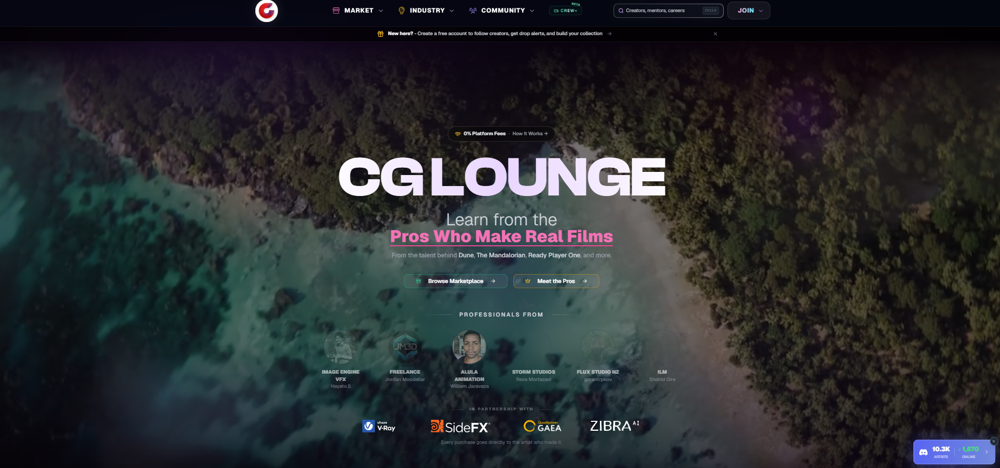
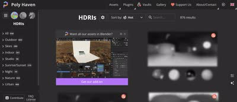
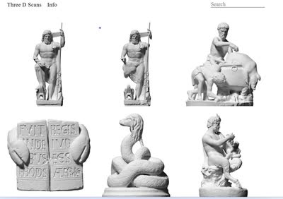
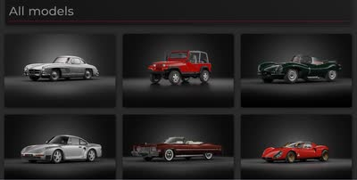

記事・リンクを検索
⌘K
普段の情報収集に使っている海外サイト・プラットフォーム・アセット配布サイトの一覧。自分の情報源そのものを公開しています。
13 件のポストを収録 · 最終更新: 2026-08-28

映画・VFX業界のプロがチュートリアルやアセットを直接販売するマーケットプレイス。

Image EngineのLighting Supervisor、Arvid Schneider氏が運営するCG Loungeのジャーナル。様々な記事がまとめられている。

レンダラーごとに異なるノード名をまとめて比較できるサイト「Render Node Comparison」。レンダラーを切り替えた際にノード名がわからない時に便利。

Houdiniで便利なノードセットアップがまとめられているサイト「codercat」。

ArtStationの「Tutorial」「Technical Art」「Web and App Design」といったページには、見落とされがちだがTipsがまとまっていることが多いという活用法。

VFXにおけるAIのワークフローを共有するプラットフォーム。

Image EngineのLighting Supervisor、Arvid Schneider氏が、CGアセットやチュートリアルを手数料なしで販売できるプラットフォームをローンチしたこと。GumroadやArtStationに比べ露出は下がるが、コアな層には届くとしている。

VFXとAIに関する記事を定期的に更新しているウェブサイト。AIとは付き合っていくしかないという考えのもと紹介している。
汎用アセット・特定アセット・キットバッシュを扱う3Dアセットサイト。CGTraderやTurbosquidなど、テクスチャ・HDRIも扱う汎用サイトが紹介されている。

HDRIが入手できるサイトのまとめ。Poly Heaven（無料）、Textures.com（サブスク）、Poliigon（一部無料）、CGEES（無料）、HDRI Skies（一部無料）、MattePaint.com（サブスク）などが挙げられている。

地形の3Dスキャンモデルを購入できるサイト「The Terrain Domain」。Megascansにはないような地形も多く扱っている。

彫刻などの3Dモデルを無料で入手できるサイト「Three D Scans」。商用利用の可否は不明だが、自主制作には十分使える。

無料で使える高品質な車の3Dアセットを提供するサイト「Wire Wheels Club」。